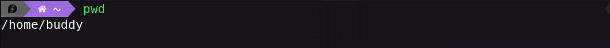
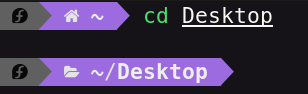
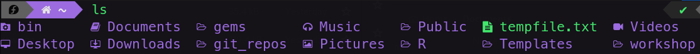
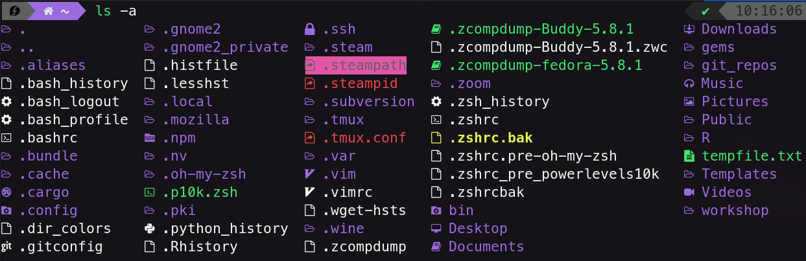

What are Command Line Interface (CLIs)
Takeaways
Testing Description [Estimated Read Time 10 mins]
In this blog you will learn basic bash commands. By the end of this you will know:
- Basic commands to traverse your computer from the terminal
- The structure or commands, arguments, and options in
bash - How to edit, create, move and delete files
- Create a script to make a folder structure for each new project you are working on.
Prerequisites:
- None
Use this link to set up the Takeaways as a section to have it be bubbly and etc https://github.com/jekyll/jekyll/issues/246#issuecomment-583053
Apperance is Important
Change your Default Terminal Colors NOW!
The happier you are when you look at your terminal the happier you will be when coding. More Happy means more coding. More Coding means more practice. More practice means Great Coder!
This same principle applies for all text editors/IDEs (integrated developer environment) by the way. So it sounds like a joke, but seriously take some time to have a nice looking coding environment.
In order to change them, you should be able to create a default profile for most terminal emulators and change the color scheme, opacity, font, etc.
Know your OS
Knowing what OS you are on is super important as the commands change across them.
Luckily Linux and MacOS share most of the commands because they use the same shell (you have probably heard of bash before).
This is especially useful to know, because all servers and super computers/computing clusters all run Linux, so having familiarity with the shell via using MacOS is very valuable.
In contrast, Windows uses CMD or Powershell which has a differnt syntax and command list.
Luckily for you, there is a project to give Windows bash commands called gitbash, and I highly reccomand you use that to be able to follow along.
Most of the time if you get some CLI (command line interface) code it will assume bash so its just a good skill to have.
Speaking of bash it stands for Bourne Again SHell.
However, recently (since around 2019 or so) both MacOS and many Linux distros switched the default shell to zsh (or The Z shell).
This is, for the most part, entirely compatible with bash except that it adds some nice quality of life improvements that are beyond the scope of this blog, but feel free to explore on your own.
I will say that for Mac users specifically, I would reccomend you check out iTerm2 as an alternative to the standard terminal and oh my zsh to add some amazing color theming for some general improvements.
But of course this is not necessary. Mac users, I will be uploading an install script to match my own setup. And a link to it will be updated here.
Knowing Your Way Around with bash
First, thing open up your terminal. If you are using MacOS or Linux you can expect it to look something like this:
NEED to show example can be replaced with an image
Explain what each piece means
There are three really important commands to know to navigate around the your file system:
pwd: Print working Directorycd: Change Directoryls: List (Contents)
One analogy for these commands is imaging you are on a random street in a US city that you don’t know.
The pwd command is like looking up your current address. It will tell you were you are.
The ls command would be like looking around the street (or on your map) to see what restruants are on the street.
And cd would be like moving to a new location.
In keeping the analogy, you can’t just move to an arbritrary new street because you don’t know this city.
Instead you have to give precise directions either from were you are currently or relative to some clearly visable space (say a big colorful building you can see from anywhere in the city).
Now let’s see these in action.
pwd
~ pwd
/user/deshawn

the pwd command return where were are currently looking and is equivalent to getwd() in r or os.getcwd() in python.
As you can see I am in my users home directory.
This is a super common place, so it has a shortcut that can be accessed with ~ called the tilde and its above tab and to the left of the 1 on the keyboard.
Hint: Capitalization matters so make sure you keep that in mind. I personally always have my folders names lowercase to make this easier. Simlarly spaces require an espace
\, so I also avoid spaces in repo names (typically using_’s.
cd
~ cd Desktop
~/Desktop

The cd command allows you to change your current working directory similar to os.setwd in R and os.chdir() in python.
Unlike most programming languages you are probably familiar with in bash you don’t have parentheses.
The arguments are just placed after the command separated by a space.
For more info about the structure of bash scripting see below
Hint: Before finishing the location you want to go, you can hit tab to autocomplete the argument. This is invaluable and will save so much time to working memeory capcity so definitely try it out. Also for
zshusers you can even type out partial directories and have your shell complete e.g.,cd De/gitwill givecdto myDesktop/github_repodirectory.
ls
➜ ls git_repos/good_coding_practices
README.md git.md imgs modeling.md pwd.png
cli.md good_practices.md markdown.md productivity.md python.md

The ls lists all directories and files inside the specified directory (defaults to your current working directory if no directory path is specified).
I have mine set up to give different colors to folder, which you can ignore for now.
Hint: This command works for me because I have a folder on my computer called
git_repos/good_coding_practices, but you probably do not. You can either make one to follow along or even better use a different folder to see the files there. But separate from that I will teach you about the optional argument-a:

ls -a (a for all) shows all hidden files and directories in addition to the nonhidden ones.
A hidden file is just one that starts with a ..
In out case, the .git folder is one example.
The form of Commands
A command is just a mini program that executes when you call it from a terminal. But in order to best understand terminal commands its useful to know how they are structured. Every command has 3 basic (potential) parts. The command itself, any options you can apply, and finally any arguments.
As you saw above with the cd command, we had an argument (the new directory to change to).
Again the argument is separated only by a space (no parenteses as you may be used to from other programming languages) and any additional arugment is also separated by a space.
For the ls command we learned about the -a option again separated by a space. Options in bash start with a -.
It is common practice for single letter options to have a single - and full word arguments have two --.
Now that you know how commands are structure the next couple sections will list a bunch of useful basic commands before we end by showing you a way to learn the ins and outs of a command (like its options) and how to find a comand to perform a task you suspect exists.
Creating/Deleting/Removing New Folders and Files
For all the commands the relevant arguments will be in []
mkdir: Make Directory (folder) [name_of_folder_to_make; use the-p(for make parent directories) if you want to make multiple nested folders simultaneously]touch: Make an Empty File [name_of_file_to_make]cp: Copy [name_of_file_to_copy;name_of_location_to_copy_to]mv: Move [name_of_file_to_move;name_of_location_to_move_to; can also be used to change a files name if you move it to the same location with a new name]rm: Remove a file [name_of_file_to_remove]
Viewing Contents and Editing Files
nano: A simple to use text editor. You will likely hear about other editors likevimoremacs. Both are really good, but they have a really hard learning curve, so I don’t reccomend them when you start out. I personally usenvim, which is a modern replacement forvim. [name_of_file_to_edit]cat: Concatenate (prints out files contents) [name_of_file_to_print]less: Less (is more… powerful). Useful for printing out really long docs becuse you can scroll through them [name_of_file_to_print]more: More (of the content on screen) Useful for printing out really long docs but not as good asless[name_of_file_to_print]
How to Learn About New Commands
These commands are more important to remember because they let you find a command to do perform and actiona as well as learn how to use that command:
apropos: à propos (meaning with regard to). This command allows you to search for all commands the perform function/have anything in their name/description about a topic. [descriptiion_or_nameyou want to search for]If you only remember one command this is the one to remember
man: (Pull up the) Manual (for the respective command so you can learn all the options available) [commandyou want to know more about similar tohelp()or??in most languages]
Further Exploration
As you can imagine, this is just a taste of the command line. You can do so so much more. Hopefully this was just enough to wet your appetite, and make you eager to explore more. One great place to start is with Modern Unix. This is a project that has upgrades many of the commands we just talked about to fit with the modern world, (e.g., adding colors, speed, etc.). Another way to speed things up is to make alias which you can write short hand for really long commands.
Homework
Try to make a new folder called git_repos somewhere on your computer and either move or copy a file into.
Then make README.md file (for advanced users try nano or vim to edit it and say something).
Finally, make a file that can setup a folder structure for all new projects (we didnt discuss how to make workable scripts, but thats ok you can just copy and paste for now). Inside the newly created folder you should you should have a the following structure:
my_first_bash_script/
|-- analyses/
|-- plots/
|-- expriment/
|-- data/
|-- lit_review/
|-- supporting_docs/
|-- scales/
|-- irb_docs/
|-- DEVELOPEMENT_DECISIONS.md
|-- README.md
Feel free to mess around with this structure a bit to suit your own needs, but having some basic structure for all projects is very important.
I highly highly reccommend two separate .md files.
The README is for anyone first coming to the project on how/why to run this code and what is found were (this can be updated at the very end of the project when it is read to be published).
In contrast the DEVELOPMENT file is a place where you should write down every decision you made for the project.
Why did you use this library instead of that on, why did you have 60 trials instead of 90, why did you exclude a subject etc.
I personally also leave a ton of links to stack[exchange/overflow] for how I came up with code or to justify certain things to myself.
This file can also be private and not actually published anywhere if you prefer, but trust me, especially when writing a methods sections this is invaluable.